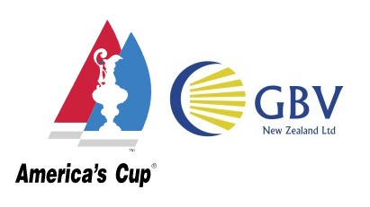

Education & Experience


I am a
C

Python, LAD

Arduino, STM, Raspberry Pi
OpenCV, TensorFlow
Solidworks, Fusion360
I am a Mechatronics student at the University of Canterbury with a strong passion for robotics and embedded development. Throughout my studies, I have consistently achieved highly and have been fortunate to apply my theoretical knowledge to practical engineering challenges during my internships. At Global Bus Ventures, I specialized as an electrical design engineer, focusing on developing comprehensive electrical schematics to integrate components such as fuel cells, batteries, and high-voltage distribution boxes. These efforts contributed to the development of a functional hydrogen subsystem, which was later implemented in the chase boats for the 2024 America’s Cup. At Trimble, I was responsible for designing a product verification solution for a production environment. This involved developing a computer vision system, training a machine learning model for pattern recognition, and designing a high-resolution Hall sensor PCB to analyze magnetic properties. Now in my final year of university, I am eager for the challenges ahead. Outside of engineering, I enjoy the outdoors—whether it’s overnight tramping or playing various sports. On rainy days, you’ll find me reading or working on my latest personal project.


Email: conalhsmith@gmail.com
02/2022 - 11/2025
Final year student studying Mechatronics engineering. Current GPA of 8.33. Studies focussed on robotics and embedded systems.
Participated in robotics competitions, designing and building autonomous robots. Conducted research on control systems for autonomous vehicles.
Graduated with honors. Published a research paper on autonomous navigation. Won first place in a national robotics competition.
2025
Description here.
2023
Created from the ground up, including PCB design and assembly, fabrication and development of mechanical components, and programming. Initially this involved using KiCad to develop electrical schematics and PCB layouts for both the main and line sensing circuits. The goal of the main circuit was to distribute power from the batteries to the MCU, motors, and light sensing circuits. This challenged my electrical design skills, but the result was a greater understanding of circuit design and analysis and two functional circuit boards/PCB’s. The next step was to design the mechanical components of the robot within CAD, whilst optimizing for both speed and style. The programming stage seemed relatively simple, however the robot was unable to change speeds, which I discovered was due to the motor drivers not being connected to the PWM outputs of the MCU. This was a major learning lesson as it how a simple mistake within PCB design can effect the entire system. By performing simple wire bypasses and touching up the code, the robot was able to swiftly maneuver the given course.
2023
The goal of this project was to develop a two-player game using UCFK4 microcontroller boards. Objectives included utilizing provided API modules to abstract hardware dependence, demonstrating clean programming principles, and creating a game of chosen complexity. The project was to be completed in teams of two with randomly selected partners. To maximize productivity, we discussed our respective strengths and weaknesses relevant to the project and identified areas where we wanted to learn. We challenged ourselves to design a high-complexity game (PONG) to maximize the learning outcomes. Overall, we worked effectively as a team and produced a flawless game, as reflected in our final grade. The repository for the project can be found here: https://github.com/conalhsmith/2-Player-Pong
2023
This robot was inspired for the purpose of keeping my dog entertained whilst I studied. I completed this project before we had practiced applying technical knowledge to real applications within university coursework, so it was generally self taught. A challenging part of this project was actively avoiding all the similar projects online, as doing so would’ve taken away from my learning experience. At this stage I didn’t have access to a 3D printer so I had to use some initiative in sourcing parts from around the house. Overall this project enhanced my problem solving abilities, and taught me how to split a challenging project into smaller, easier parts.